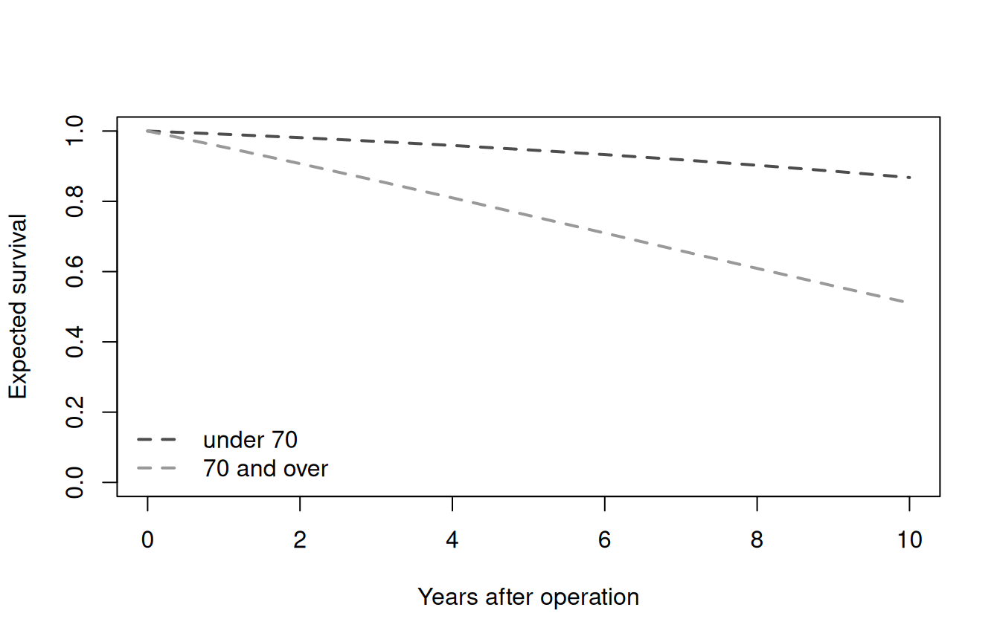

What is the dashed line?
Most survival figures from our group carry two curves. The solid one is the study cohort, a Kaplan-Meier or a parametric fit. The dashed one is what the same patients could have expected had they never been operated on: the survival of a US population of the same age, sex and race. A reader’s eye goes straight to the gap between them.
In SAS that dashed line came from the macro %usmatchd. hvtiRlifetables is its R replacement. You give it each patient’s age, sex and race, a vector of follow-up times and a reference vintage, and it returns the matched survival and hazard, per patient or averaged over the cohort.
This vignette walks one small synthetic cohort through that workflow, end to end. It assumes you know R and survival analysis; it does not assume you have read the macro.
Why a fitted model, and not a life table?
You might expect a package like this to carry life tables and interpolate them. It does not, because %usmatchd never did. The macro runs PROC HAZPRED against a stored three-phase hazard fit (Blackstone, Naftel and Turner, 1986) on the age axis, with time zero at birth rather than at surgery. A patient who is 70 at operation and followed for 5 years is read off that one smooth curve twice, at 70 and at 75, and the matched survival is the ratio:
So the package ships the fitted parameter blocks, nine strata per vintage, and evaluates them through TemporalHazard. survival::survexp.usr is not a substitute; it is a table, and it does not reproduce the macro’s numbers in any of the vintage and interpolation combinations we tried.
The R side has been checked against production SAS output: all 32 stored %usmatchd answers from two studies match to 7.9e-15 at worst.
Choosing a vintage
Every call names a reference vintage, and there is no default. Start by looking at what is available:
v <- us_lifetable_vintages()
v[, c("vintage", "n_strata", "nonwhite_code", "added")]
#> vintage n_strata nonwhite_code added
#> 1 table84 9 o <NA>
#> 2 table2008 9 b <NA>
#> 3 table2023 9 b 2025-12-23The vintages are not interchangeable. They are separately fitted models with different structure, so the same patient gets a different answer from each, and the difference is large enough to matter on a figure.
Read the nonwhite_meaning column before you name a stratum anywhere a reader will see it:
for (i in seq_len(nrow(v))) {
cat("- **", v$vintage[i], "**: ", v$nonwhite_meaning[i], "\n", sep = "")
}- table84: Other (all non-white), named honestly by this vintage
- table2008: Black, per the macro’s documentation; not independently verified
- table2023: risk-weighted average of Black, Asian, American Indian and Hispanic death rates, weighted by number at risk. NOT Black, despite the stratum code and despite the macro’s own comment.
The code b in table2023 does not mean Black. It is a risk-weighted average of Black, Asian, American Indian and Hispanic death rates, stored under b to keep the macro’s naming. The macro’s own comment says otherwise and is wrong. A figure legend or a methods sentence that says “Black” because the code says b is a clinically wrong statement, and one that looks exactly like what everyone expects. Take the wording from nonwhite_meaning, never from the code.
Leaving the vintage out is an error, on purpose:
us_matched(age = 70, male = 1, other = 0, times = 5)
#> Error:
#> ! `vintage` has no default and must be given. Available: table84, table2008, table2023.
#> This package refuses to guess: the SAS macro's default silently moved twice, from table84 to table2008 and then to table2023, and every job re-run across either move got different numbers with no signal.The macro’s default moved twice, from table84 to table2008 and then to table2023, and jobs re-run across either move got different numbers with no warning. Writing the vintage into the analysis code is the only way a reader can tell which reference population a figure used.
A small cohort
The rest of this vignette uses 60 synthetic patients. Nothing here comes from a study; the ages and indicators are drawn at random.
set.seed(1986)
n <- 60
cohort <- data.frame(
id = sprintf("pt%02d", seq_len(n)),
age = round(stats::runif(n, 45, 85), 1),
male = stats::rbinom(n, 1, 0.6),
other = stats::rbinom(n, 1, 0.2)
)
head(cohort)
#> id age male other
#> 1 pt01 64.3 1 0
#> 2 pt02 53.4 0 0
#> 3 pt03 69.4 0 0
#> 4 pt04 58.2 1 0
#> 5 pt05 69.0 0 0
#> 6 pt06 71.3 0 0male and other use the macro’s coding unchanged: male is 1 for male and 0 for female, other is 1 for the vintage’s non-white category and 0 for white. Age is always in years.
One curve per patient
us_matched() takes the cohort’s columns as vectors, along with the follow-up times at which you want the curve:
x <- us_matched(
age = cohort$age,
male = cohort$male,
other = cohort$other,
times = 0:10,
id = cohort$id,
vintage = "table2023"
)
head(x, 4)
#> id time agesurv smatched hmatched
#> 1 pt01 0 0.8252706 1.0000000 0.01457028
#> 2 pt01 1 0.8252706 0.9848060 0.01607380
#> 3 pt01 2 0.8252706 0.9683175 0.01772023
#> 4 pt01 3 0.8252706 0.9504665 0.01952071The result has one row per patient per time. Three columns carry the answer:
-
agesurvis survival from birth to the patient’s current age. It is constant within a patient. -
smatchedis the reference survival over follow-up, conditional on having reached that age, so it starts at 1. -
hmatchedis the reference hazard at each time.
table = "sexrace" is the default and matches on all four sex and race crossings. "race", "sex" and "overall" match more coarsely, mirroring the macro’s TABLE= option.
The cohort curve
A figure does not want 60 dashed lines. It wants one, the cohort’s expected survival at each time, and us_cohort_curve() gives you that:
expected <- us_cohort_curve(x)
expected
#> time smatched hmatched
#> 1 0 1.0000000 0.02070850
#> 2 1 0.9787850 0.02218883
#> 3 2 0.9565722 0.02373322
#> 4 3 0.9333917 0.02533945
#> 5 4 0.9092841 0.02700485
#> 6 5 0.8843002 0.02872631
#> 7 6 0.8585007 0.03050041
#> 8 7 0.8319559 0.03232350
#> 9 8 0.8047449 0.03419182
#> 10 9 0.7769546 0.03610167
#> 11 10 0.7486783 0.03804956The averaging is the macro’s, and it is made in this one function so that two studies cannot average differently without noticing. Survival and the density (hmatched * smatched) are averaged across patients at each time, unweighted, and the mean hazard is recovered by dividing one by the other. The hmatched column is therefore not the mean of the individual hazards; in a mixed-age cohort the two differ. us_matched(..., individual = FALSE) returns the same curve in one step.
Reporting by group
Most papers break the comparison down: by age band, by treatment arm, by era. us_cohort_curve() takes a by argument for that. Because x has one row per patient per time, a patient-level grouping is expanded to it by id:
band <- cut(cohort$age, breaks = c(0, 70, Inf), right = FALSE,
labels = c("under 70", "70 and over"))
by_band <- us_cohort_curve(x, by = band[match(x$id, cohort$id)])
by_band[by_band$time %in% c(0, 5, 10), ]
#> group time smatched hmatched
#> 1 under 70 0 1.0000000 0.008606059
#> 6 under 70 5 0.9464726 0.013767510
#> 11 under 70 10 0.8677007 0.021466835
#> 12 70 and over 0 1.0000000 0.044913386
#> 17 70 and over 5 0.7599554 0.065986624
#> 22 70 and over 10 0.5106335 0.094406404Keep by and table apart in your head. table decides which strata the reference life table is built from. by decides how the resulting curves are grouped for reporting. A report by age band is normally still matched on "sexrace"; the band only changes which patients each dashed line averages over.
Plotted, these are the two dashed lines you would overlay on each band’s actuarial curve:
plot(NULL, xlim = c(0, 10), ylim = c(0, 1),
xlab = "Years after operation", ylab = "Expected survival")
for (g in levels(band)) {
d <- by_band[by_band$group == g, ]
lines(d$time, d$smatched, lty = 2, lwd = 2,
col = if (g == "under 70") "grey30" else "grey60")
}
legend("bottomleft", legend = levels(band), lty = 2, lwd = 2,
col = c("grey30", "grey60"), bty = "n")
How much does the vintage matter?
The same cohort against all three vintages, ten years out:
at_10 <- vapply(v$vintage, function(vin) {
curve <- us_matched(cohort$age, cohort$male, cohort$other,
times = c(0, 10), vintage = vin, individual = FALSE)
curve$smatched[curve$time == 10]
}, numeric(1))
round(at_10, 3)
#> table84 table2008 table2023
#> 0.662 0.722 0.749For this cohort, table84 and table2023 are nearly nine percentage points apart at ten years. The closest pair, table2008 and table2023, still differ by close to three, which is small enough to look plausible on a figure and survive review. That is why the package makes you say which one you meant.
Three things to know before you rely on it
hmatched is per year, always. Whatever scale you pass ("years", "months" or "days"), time is in those units but hmatched stays a hazard per year. That reproduces the macro’s code, not its header comment, which claims otherwise. If you need a per-month hazard, divide by 12 yourself.
The fits stop at age 110. If any patient’s age plus follow-up passes 110, us_matched() stops rather than extrapolating.
A curve that does not move is an error. If the matched survival comes back identically 1 or 0 across the requested times, the function stops and says so. That failure has turned up often enough in studies to be worth catching before it reaches a figure.
Where to go next
-
?us_matcheddocuments every argument, includingscale,tableand the output columns. -
?us_cohort_curvecovers the averaging and the formsbyaccepts, including a named list for crossed groupings. -
?us_lifetable_modelreturns the raw fitted parameters for one vintage and stratum, for when a number looks wrong and you want to see the model behind it. -
?us_lifetable_modelsdescribes the shipped dataset and its_STATUS_gate.